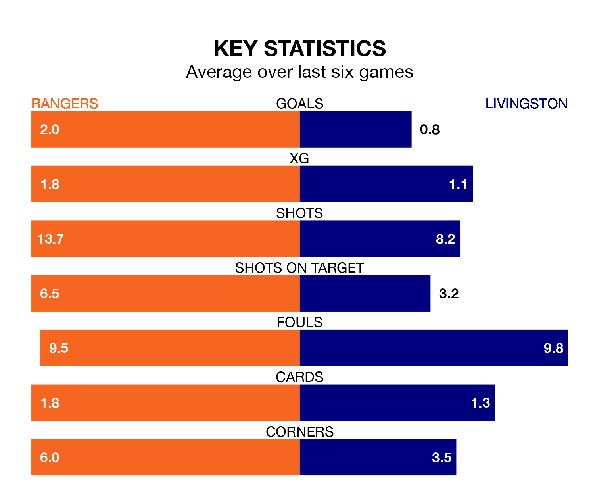

Relegation candidates Livingston face a challenge away against high-flying Rangers at the Ibrox Stadium on Saturday.
Livingston are rooted to the bottom of the Premiership table, and have picked up just two wins and seven draws in their 23 games to date.
Rangers, meanwhile, are second in the standings with 52 points, having won 17 and drawn one of their first 22 matches, and are five points behind table-toppers Celtic.
With 45 goals in 22 games so far this season, Rangers are the league's second-highest scorers with 2.0 goals per game. And they are conceding fewer than average, letting in 11 goals at a rate of 0.5 per game.
Livingston, meanwhile, are below average scorers, with 0.7 goals per game, compared to a league average of 1.3. They have conceded 1.7 goals per game.
With Jack Butland between the sticks, the hosts can rely on one of the league's safest pair of hands. He has kept 14 clean sheets in his 22 appearances this season, and no 'keeper has prevented the opposition scoring more often in Premiership.
In the away side's net, Shamal George has four clean sheets in 17 games. He has conceded a goal every 67 minutes, nearly three times as often as the 180 minutes between goals for Butland.
Rangers are in fantastic form in Premiership, with five wins and one loss from their last six games.
With no wins and two draws over that period, Livingston's form is much worse – they have taken two points from 18, compared to Rangers's 15.
In the last 10 years, Rangers and Livingston have played each other on 30 occasions. Rangers won 23 of them, Livingston two, and they drew five times.
On average, Rangers scored 1.9 goals and Livingston 0.3 in those matches.
Their last meeting was on November 12, when Rangers won 2-0 away.
Rangers's last match was on January 27, a 1-0 win against St. Mirren, with Cyriel Dessers getting the goal for Rangers.
Livingston drew 2-2 with Ross County last time out, on Tuesday, with Daniel Mackay and Scott Pittman on the scoresheet.
Saturday's match will be refereed by John Beaton, who has taken charge of 12 Premiership games so far this season, issuing one red card and booking 56 players. He has awarded 11 penalties.
The last Rangers game Beaton refereed was a 3-1 home win against Kilmarnock on January 2. His last Livingston match was their 3-0 loss at home against Celtic on September 23.
Updated: 10:40 (UTC), 01/02/24